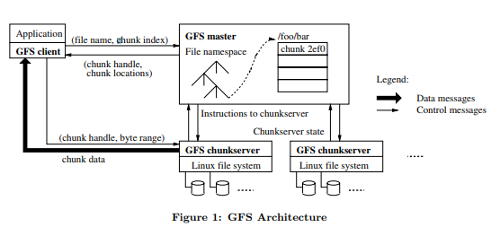
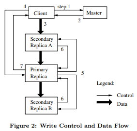

【分布式】《The Google File System》笔记
[TOC]
背景
The Google File System 在6.824中以谷歌的分布式系统作为例子对分布式系统架构与实际应用做了介绍，也是对分布式系统的一个基本印象,以下为自己的一些学习笔记，方便后续加深印象和理解。GFS解决的是分布式文件存储问题。
简介
需要考虑的设计点:
- 1.容错(持续监控、错误探测、容错和自动恢复)
- 2.文件存储设计(I/O,Block Size)
- 3.针对
数据追加特性进行设计与优化 - 4.应用灵活性设计
2 设计
2.1 假定条件
GFS设计的背景是已有许多廉价的硬件设备和组件，而且并不能保证其稳定性的情况下能支撑一套分布式的文件系统，它能持续监控、错误探测和自动恢复.
- 存储一定量级的大文件,主要是针对大文件(100MB)以上,小文件不做特定优化
- 工作负载主要组成
- 1.大规模的
流式读取 - 2.小规模的
随机读取 - 3.对性能敏感的应用把小规模
随机读取分别处理进行并序处理(pipeline)
- 1.大规模的
- 工作负载其他组成:
- 1.大规模、顺序、对文件的
追加写数据操作 - 2.
任意位置小型写操作
- 1.大规模、顺序、对文件的
- 系统具有高校、明确的语义支持多客户端并行对一个文件进行追加操作
- 注重
高效的并行写，读可以稍后 - 重视带宽效率、容忍延迟。即
看重高速率大批量的处理数据,对单一读写操作容忍慢响应
2.2 接口
- 提供一套
常见的文件系统操作接口 - 支持常用操作,创建、删除、打开、关闭、读写
- 支持
快照，低成本地创建一个文件或者目录树的拷贝 - 支持
记录追加,多客户端并发对一个文件追加，且保证其原子性
2.3 架构

- 只能存在有且只有一个
逻辑master - 一个逻辑master包含
- 两台物理机
- 多台chunkserver
- 允许client和chunkserver应用在同机器
- 文件都会被分割成
固定大小的分块(chunk),且文件创建的时候master会分配全局唯一的64位文件句柄 - 默认会对文件存储
三个副本,支持复制等级设置 - Master工作:
- 1.维护所有的文件系统的
元数据,包括:- 1.命名空间(Namespace)
- 2.访问控制信息
- 3.文件到块(chunk)的映射信息
- 4.块(chunk)当前所在的位置
- 2.控制全系统的活动,包括:
- 1.块租约信息管理(chunk lease management)
- 2.孤立块的垃圾回收(GC)
- 3.块在chunkserver之间的转移
- 4.通过定期的心跳包,收集chunkserver的状态
- 1.维护所有的文件系统的
- 不管客户端还是chunkserver都无需对文件数据进行缓存
- 1.客户端不缓存原因:
- 流式处理大文件，无法缓存
- 工作集太大无法缓存
- 2.chunkserver不缓存原因
- 数据块是以本地文件方式保存,linux系统自带缓冲区已经把经常访问的数据缓存起来了linux缓冲区介绍
- 1.客户端不缓存原因:
2.4 单一Master节点
- 客户端的IO操作不是跟master进行,而是通过master获取需要连接的chunkserver,然后对chunkserver进行IO操作。
- 读取交互例子:
- 1.客户端使用固定块大小将应用程序指定的文件名和大小转换成
块索引 - 2.客户端提交
块索引给Master - 3.Master回复相应块的
句柄和副本位置信息 - 4.客户端缓存这些信息
- 5.客户端发送请求到最近的一个副本处,进行读取操作
- 1.客户端使用固定块大小将应用程序指定的文件名和大小转换成
2.5 块大小(chunk size)
- 块大小是
关键的设计参数之一 - 64MB
- 每个块副本都是以
普通的linux文件形式保存在chunkserver,在有需要的时候才扩大 - 块尺寸大优势:
- 减少客户端和逻辑Master的交互需求
- 由于块比较大,客户端有更大可能对同一块执行多次操作,客户端可以对这个chunkserver保持TCP长连接，减少网络复杂。
- 减少逻辑Master上保存的元数据大小,可以把元数据缓存在内存(ps:块大了,访问相同量大小的数据时候触发的元素据就少了)
- 块尺寸大劣势:
- 尺寸越大热点越容易堆积在一台chunkserver上，导致过载(解决:1.副本加多 2.错开程序执行时间)
2.6 元数据
- 元数据都会保存在内存中
- 物理Master服务器主要存储三类元数据:
- 1.文件和块的命名空间
- 2.文件到块的映射
- 3.每个块副本的位置
- PS: 1和2 会持久存储(通过存储变更记录方式) 3会定期从chunkserver收集
- 由于元数据保存在
内存中,Master的操作非常快 - 存在的问题:块的数据，即
整个系统的容量受限于master所拥有的内存大小 - 由于使用
前缀压缩紧密地存储文件名称，每个文件通常的命名空间数据少于64字节 - Master不持久化每个块副本位置信息的原因:chunkserver才是最终决定块是否在其磁盘上,chunkserver上的错误可能会导致块不由自主的消失，会造成与Master上信息不同步,因此在Master维护并无意义。
- [重要]操作日志: 包含了关键的元数据变更历史记录
- 操作日志需要可靠的存储，Master会在日志记录和副本写入磁盘完成后才会响应客户端
- Checkpoint: 变更日志的检查点,类似snapshot
- Master只需要最新检查点和后续的变更日志文件,但实际上为了提防灾难性故障,会保留部分检查点
2.7 一致性模型
- GFS有一个
宽松的一致性模型 - GFS一致性保障
文件命名空间的变更是原子的,只能由master控制- 命令空间锁保证了原子性和正确性
- Master的操作日志定义了这些操作的全局完整的顺序
- file region 一致条件: 所有客户端、不管从哪个副本读取，总是能看到相同的数据
- file region 已定义条件: file region是
一致的而且客户端能看到变更写入的完整内容
- GFS保证变更的file region是已定义的方法:
- 1.对块的所有部分应用相同的顺序变更
- 2.使用
块版本号来监测过期的副本(产生原因:副本所在的chunkserver宕机期间过错了变更),过期的副本不会涉及变更,也不会返回给相关请求的客户端。而且它们会被优先垃圾回收
- 只有块的所有副本在GFS做出反应前全部丢失,该块才会不可逆转的丢失。如果还有副本存在,而且master监测到异常,会自动修复
- GFS宽松的一致性模型实现点:
- 依赖追加而不是重写
- 检查点
- 自验证
- 自识别记录
- GFS宽松的一致性模型实际实现:
- 文件的变更通过追加而非重写
- 追加新文件并设置数据检查点或者重命名
- Readers仅校验并处理上一个检查点后的file region
- Writer写入的时候记录带上检验和额外信息用于给Reader检查和识别记录的唯一性。
3 系统交互
3.1 租约与变更顺序

- 变更(mutation)定义:改变块内容或者块元数据的操作。
- 租约(lease)定义:Master给其中一个副本的一个授权,用于对块的所有变更选择一个序列,让应用变更时候所有副本都遵照这个序列
- 租约初始过期时间为60秒,但是只要块在变更,主副本可以申请并且通常得到master的无限期延长.
- 写流程的租约机制
- 1.Client 请求询问 Master 哪一个chunkserver持有指定块的租约,以及其副本位置,若没有chunkserver持有租约,master会将租约授权给它选择的副本.
- 2.master将主副本标识以及其他副本的位置返回给client。client缓存下来,只有当主副本不可用或者响应其不再拥有租约时候才回去请求master重新开头操作.
- 3.Client会将数据推送到所有副本,而且可以以任意顺序。Chunkserver会把数据存储在内部的LRU中,等待过期或者被使用。
- 4.当所有副本都确认接收到了数据,Client对主副本发送写请求。主副本要为所有变更分配连续的序号(顺序),然后按这个顺序把变更应用到本地的状态中.
- 5.主副本将写请求转发到所有次级副本。次级副本也是要按顺序应用变更。
- 6.所有次级副本会响应主副本的来表明他们都已经完成了操作
- 7.主副本响应客户端.副本上的所有产生的错误都会响应给客户端。万一遇到错误，写入的操作也可能已经在主副本或者其他次级副本执行成功。(如果主副本写入失败,它不会分配和分发新的序号).客户端的请求会被认为是失败的,所修改的域会进入一种非一致性的状态.客户端会通过重试刚才的错误变更来处理这样的错误。会首先在步骤3-7中间进行小范围重试,重试失败再重头重试写操作
- 如果一个应用的写操作很大或者超出一个chunk的大小,GFS客户端会把它分解为多个写操作.它们都会遵循上述操作流程.但是由于同一时间被多个客户端并发操作,插入或者覆盖.因此共享文件域可能最终包含不同客户端的片段,虽然这些副本都会是一致的,因为它们各自的操作都按相同顺序在所有副本上都执行成功.但这会让文件域处在一种一致但未定义[2.7有描述]状态.
3.2 数据流
- 为了提高使用网络的效率,我们将数据流从控制流中解耦出来.(原因:数据流占带宽远大于控制流)。数据会被线性地通过一个精心挑选的chunkserver链路像流水线那样推送过去.
- 目的:
- 1.最大化使用每个机器的带宽 -> 线性推送而非分布式拓扑切分
- 2.降低链路延迟(high-latency) -> TCP数据流水化,全双工链路,chunkserver收到数据立即下发
- 3.避免网络瓶颈(bottlenecks)
- 最大化带宽: 线性推送
- 降低延迟和避免高瓶颈: 每个机器会向网络中还没收到该数据且最近的那个机器推送数据.拓扑简单,距离地址可通过IP地址估计出来.
3.3 原子性记录追加
- GFS提供一个与传统不同的特殊原子性的追加操作叫
record append.其差异:- 传统 append:
- 1.在写操作,用户需要指定数据和需要写的偏移位置.
- 2.相同区域的并行写操作是不可串行的
- 3.该区域末尾可能包含来自多个客户端的数据片段
- record append:
- 1.客户端唯一说明只有数据
- 2.GFS会将它至少原子性地append到文件中一次
- 3.Append的位置由GFS选定,并会返回给客户端
- 传统 append:
- 模型: 多生产者(客户端写请求) / 单消费者(GFS执行请求) +
3.4 快照(snapshot)
- 功能: 瞬间的创建文件或者目录书的拷贝,同时最小化影响正在执行的变更操作。
- 核心技术点: COW(copy on write 写时复制技术)
- 使用:
- 1.巨大数据集的分支拷贝
- 2.创建检查点,备份当前状态,后续可以轻松进行回滚
- 实现:
- 1.请求: Master收到快照请求
- 2.准备: 取消要进行快照的文件其所有chunk的租约,给Master提供创建chunk拷贝的机会
- 3.备份: 租约取消或者过期之后,Master节点把这个操作以日志方式记录在磁盘上。
- 4.记录: Master节点通过复制源文件或者目录的元数据,把这条日志记录的变化保存在内存中。(目的:新创建的快照文件和源文件指向完全相同的chunk地址)
- 5.同步: 快照后,当客户端第一次请求写入数据到【Chunk C】,它会先发一个请求到Master查询当前租约持有者。Master节点会注意到Chunk【 C】的引用计数超过了1.
- 1.Master会选择一个新的句柄Chunk【 C’】(Chunk C的克隆).
- 2.Master节点会要求每个用到Chunk 【C 】的副本创建一个叫做【C’】。(这样可以让源chunk所在服务器本地去创建备份,而不是依靠网络去同步,因为磁盘传输速度比网络快3倍)
- 3.Master确保新的Chunk【C’】拥有租约之后再回复客户端.
4 Master操作
4.1 命名空间管理和锁
- 功能: 由于Master节点许多操作会花很长的时间去执行,但我们不希望这些操作运行时候会导致其他的Master节点操作延缓。因此我们允许多个操作同事进行并且使用命名空间的域上的锁来保证执行的正确顺序。
- 核心技术点: 命名空间与域锁.
- 实现:
- 1.在存储名称空间的树形结构上,每个几点都有一个关联的读写锁
- 使用:
- 1.每个Master节点操作之前都要获得一系列的锁,通常如果涉及
/d1/d2/…/dn/leaf的操作,需要获取以下锁(ps: leaf 既可是文件也可以是目录)- 1.
/d1/d2/…/dn读锁 - 2.
/d1/d2/…/dn/leaf读写锁
- 1.
- 2.读写锁采用惰性分配策略,在不使用的时候立刻被删除。
- 3.锁的获取需要依据一个全局一致性的顺序来避免死锁：首先按命名空间树的层次排序,在同一层级按字典(a-z)顺序排序。
- 1.每个Master节点操作之前都要获得一系列的锁,通常如果涉及
4.2 副本的位置
- 定义: GFS集群是高度分布的多层布局架构(ps:more levels 意思是集群会分散在机架级别、机房级别、甚至不同地区的IDC级别)。通常Chunk服务器被安装在许多机架上、机架的出入带宽可能小于比内部机器之间的带宽要小。
- 目标:
- 1.最大化数据可靠性和可用性
- 2.最大化网络带宽的利用率
- 实现:
- 1.多台机器间存储Chunk副本(防止磁盘和机器损坏)
- 2.多个机架间分布存储Chunk副本(防止机架级别损坏)
4.3 创建、重新复制、重新负载均衡
- Chuck副本的三大做用
- 1.Chunk创建
- 2.重新复制
- 3.重新负载均衡
- Chunk创建
- 希望在低于平均硬盘使用率的Chunk服务器上创建副本
- 限制每个Chunk服务器的最近创建副本操作次数
- 把Chunk的副本分布在多个机架之间
- 重新复制
- 当Chunk有效副本数小于用户指定的复制因素,Master节点会重新复制该Chunk
- 每个需要被重新赋值的Chunk都会根据以下因素进行复制优先级的排序
- 1.Chunk现有副本数与复制因素的差值
- 2.该文件是活跃文件还是最近删除的文件,优先复制活跃文件
- 为了减小复制过程中克隆操作带来的流量影响,Master节点会对整个集群和每个Chunk服务器上进行的克隆操作数量进行限制
- Chunk服务器通过调节它对源Chunk服务器(回源操作)的读请求频率来实现克隆操作带宽的限制
- 重新负载均衡
- Master服务会周期性地对副本进行负载均衡
- 均衡的过程是平缓的,Master服务器会逐渐填满一个新的Chunk服务器而非突然填满。
4.4 垃圾回收(GC)
- GFS文件删除后不会立刻回收可用的物理空间,而是采用惰性策略,只在文件和Chunk级别进行常规垃圾收集时候进行。
4.4.1 机制
- 文件的删除将以日志形式记录下来,但并不会马上进行资源回收,而是把文件名改为一个包含删除时间戳的隐藏名字
- Master节点在对文件namespace做常规扫描时候,会执行删除指定时间前的文件(默认为3天)。
- 反删除(恢复):只要把因此文件该命为正常显示的文件名即可
- 只有隐藏文件从namespace中删除,Master服务器内存中保存的其相关的元素数据才会被删除,也才真正与其相关Chunk解除关联。
4.4.2 讨论
- 资源回收策略:由于所有文件到块的映射都存在Master的内存中,因此所有Chunk服务器上不能识别的文件和副本都可以理解为是
垃圾资源。 - 这样设计的优点：
- 垃圾回收提供了一致性、可靠的清除无用副本的方法
- 操作被批量执行，开销会被分散
- 垃圾回收在Master节点相对空闲的时间完成
- 延缓存储空间的回收可以为
意外的,不可逆转的删除操作提供了安全保障(备注:即万一意外错误删除还可以紧急恢复)
- 存在的问题:
- 延迟回收会阻碍用户调优存储空的使用,特别是当存储空间比较紧缺的时候。
4.5 过期失效的副本检测
- Master节点保存每个Chunk的版本号,以区分当前副本和过期副本
- 只要Master节点和Chunk签订一个新的租约,其Chunk的版本号就会增加,然后通知副本,Master节点和相关的Chuck服务器都会把这些版本号持久化到本地，如果某一Chunk服务器失效那么其版本号就不会被增加,更重要的是这些操作都是在客户端的真正写操作之前完成
- 过期副本的移除:Master节点在例行垃圾回收过程中移除,在此之前过期的版本号的副本将会被忽略
5 容错和诊断
5.1 高可用性
- 系统高可用保证的核心策略: 快速恢复和复制
5.1.1 快速恢复
- 不管Master服务器和Chunk服务器是如何关闭,其程序都被设计能在数秒内恢复状态并重新启动。
5.1.2 Chunk复制
- Master节点通过克隆已有的副本保证每个Chunk被完成复制(默认每个Chunk副本数是3)
- 系统主要的工作负载是追加方式的写入和读取操作,很少随机的写入操作
5.1.3 Master服务器的复制
- 为了保证Master高可用,Master服务器上的状态也要复制,其所有操作日志和checkpoint文件都会被复制到多台机器上。
- 在高可用下,Master状态修改提交成功的条件是:操作日志成功写入到Master服务器的备用节点和本地磁盘
- 影子服务器: 用于在Master服务器宕机时候提供文件系统的只读访问,其数据更新会比Master主节点慢一些,通常不到1秒。对于那些不经常变更的文件或者允许获取的数据中有少量过期数据的读操作,可以直接访问影子服务器提高读取效率。(备注:类似于读写分离,Master可读写但影子服务器只能读)
- 影子服务器的更新: 影子服务器会读取一份当前正在进行的操作的
日志副本,并且依照和Master主节点完全相同的顺序来更改内部的数据结构。
5.2 数据完整性
- Chunk服务器数损坏检查: Checksum
- 每个Chunk服务器必须独立维护Checksum来校验自己副本的完整性
- Chunk大小64KB,每个块对应一个32位的Checksum,其于其他用户数据分开，保存在内存和硬盘上，同时也记录操作日志
- 读操作数据完整性校验: Chunk服务器在把数据返回客户端或者其他Chunk服务器(备注:例如回源操作)前,都会通过Checksum校验数据完整性
- 若出现错误,会返回错误信息给客户端和Master节点,然后Master节点会通过副本克隆方法来恢复。
- Checksum对读操作性能影响很小原因:
- 1.只取小部分额外的额外数据进行校验
- 2.客户端每次把读取操作都对齐在Checksum block的边界上
- 3.Checksum的查找和比较不需要I/O操作,其计算可以和I/O操作同时进行
- Checksum针对追加写操作的优化:
- 1.只增量更新最后一个不完整块的Checksum
- 2.用所有追加新chunk来计算新的Checksum.
- Checksum针对覆盖操作优化:
- 1.必须读取和校验被覆盖的第一个和最后一个Chunk再执行写操作
- 2.完成写操作后再重新计算和写入新的Checksum
- 不活跃的Chunk完整性检查:
- 1.Chunk服务器空闲时会自动扫描和校验每个不活动的Chunk内容
- 2.一旦发现有Chunk数据损坏,Master可以创建一个新的而且正确的副本,然后把损坏的副本删除。
5.3 诊断工具
- 核心诊断工具: 系统日志,RPC日志